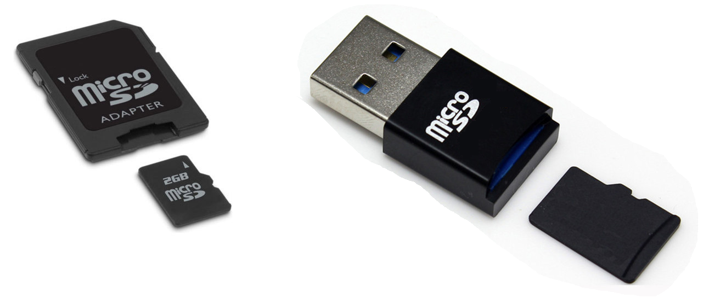

Si vous ne pouvez pas vous connecter au Raspberry Pi via le point d'accès Wifi (par exemple parce-que vous n'avez pas la carte QuickPi pour y accéder), et que la connexion par USB ne fonctionne pas, il reste une possibilité pour configurer votre Raspberry Pi : éditer directement le fichier de configuration qui se trouve sur la carte micro-SD.
Branchez votre carte micro-SD sur un ordinateur, grâce à un adaptateur vers une carte SD ou un port USB.
Refermez les éventuels messages d'alerte vous disant que la carte a un problème ou qu'elle doit être formatée. Ces messages sont à ignorer.
Depuis votre explorateur, accéder au lecteur qui correspond à la carte que vous venez de brancher. Il s'appellera probablement boot

Ouvrez le fichier quickpi.txt dans un éditeur de texte. La première fois, son contenu ressemblera à ceci :
SSID=wifinetworkname PASSWORD=wifipassword STATICNETWORK=0 STATICIPADDR=192.168.1.31 STATICGATEWAY=192.168.1.1 STATICDNS=8.8.8.8 ENABLEBLUETOOTH=0 NAME=quickpi1 SCHOOL=schoolkey
Mettez le SSID de votre réseau juste apès "SSID=". Par exemple s'il s'agit de "MonReseau", la ligne doit devenir :
SSID=MonReseau
Mettez le mot de passe de votre réseau juste après "PASSWORD=". Par exemple s'il s'agit de "MonMotDePasse", la ligne doit devenir :
PASSWORD=MonMotDePasse
Après "STATICNETWORK=", mettez un 0 si les adresses IP sur ce réseau sont attribuées dynamiquement, et un 0 sinon.
Indiquez l'adresse IP attribuée au Raspberry Pi après "STATICIPADDR=".
Indiquez l'adresse IP de la passerelle (Gateway) après "STATICGATEWAY=".
Indiquez l'adresse IP du DNS après "STATICDNS=".
Attribuez un nom à chacun des Raspberry que vous utiliserez sur le même réseau. Utilisez des lettres minuscules non accentuées et des chiffres, mais pas d'espaces. Une fois un nom choisi, collez une étiquette avec ce nom sur le Raspberry.
Renseignez ce nom après "NAME=" dans la configuration.
Attribuer un nom à votre établissement, qui sera commun à tous les Raspberry Pi que vous connecterez sur le même réseau. Utilisez des lettres minuscules non accentuées et des chiffres, mais pas d'espaces. Vous pouvez aussi l'ajouter sur l'étiquette.
Renseignez ce nom après "SCHOOL=" dans la configuration.
Après avoir modifié le fichier de configuration, enregistrez le, et éjectez proprement la carte micro-sd de votre ordinateur (comme avant d'éjecter une clé USB).

Replacez alors la carte SD dans le Raspberry PI alors qu'il est éteint, puis rallumez-le.